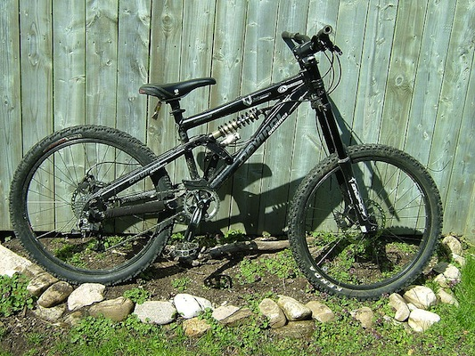
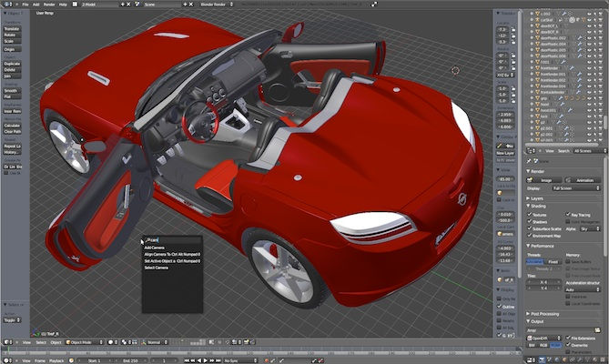
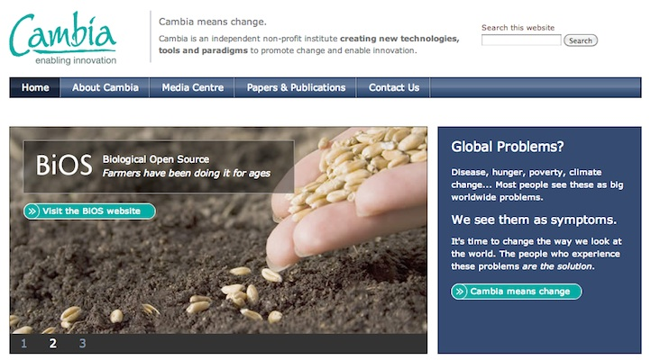
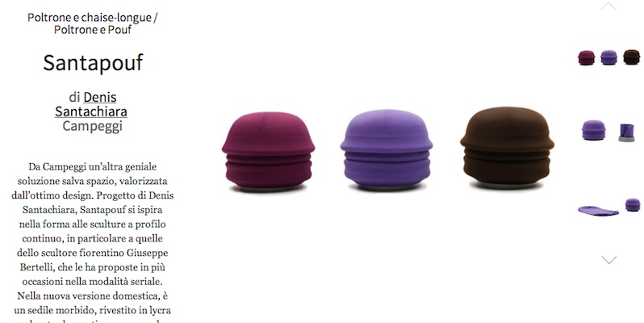
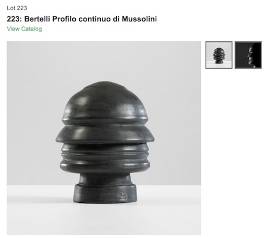
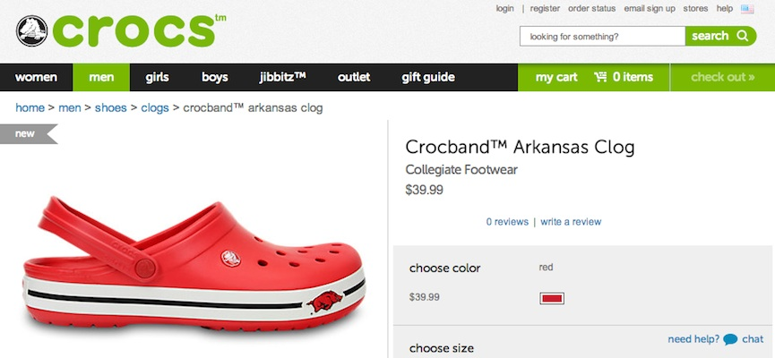
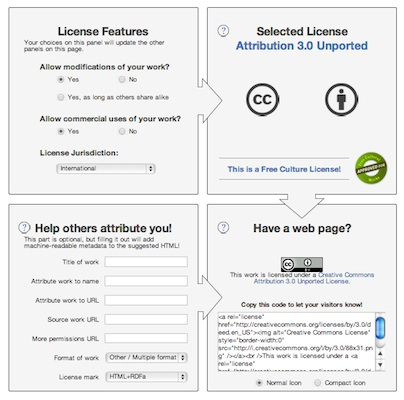

Open Design + Fab Lab
09 Gennaio 2014
01. From Design for the users to Design with the users
02. Open (Source)... everything
03. Open Design: what is it?
04. Open (Design): IP
01. From Design for the users to Design with the users
Traditional view of design
Source: http://www.alessi.com/it/prodotti/dettaglio/psjs-juicy-salif-spremiagrumi
Limitations...
Any customer can have a car painted any colour that he wants so long as it is black.
Henry Ford
Approaches...
- Design-driven
- Marketing (market pull)
- Technology (technology push)
- Mass-customization
- ...
- Human-centered Design
Human-centered Design
an approach to systems design and development that aims to make interactive systems more usable by focusing on the use of the system and applying human factors/ergonomics and usability knowledge and techniques
Source: ISO 9241-210
ISO 9241-210: Abstract
ISO 9241-210:2010 provides requirements and recommendations for human-centred design principles and activities throughout the life cycle of computer-based interactive systems. It is intended to be used by those managing design processes, and is concerned with ways in which both hardware and software components of interactive systems can enhance human–system interaction.
Source: ISO 9241-210
ISO 9241-210: Recommendations
- The adoption of multidisciplinary skills and perspectives
- Explicit understanding of users, tasks and environments
- User-centred evaluation driven/refined design
- Consideration of the whole user experience
- Involvement of users throughout design and development
Source: ISO 9241-210
Roots: Human-computer Interaction
Human–computer interaction (HCI) involves the study, planning, and design of the interaction between people (users) and computers. It is often regarded as the intersection of computer science, behavioral sciences, design and several other fields of study.
Source: http://en.wikipedia.org/wiki/Human%E2%80%93computer_interaction
Roots: Human-computer Interaction
... to a Kit for NGO
Source: http://www.ideo.com/work/human-centered-design-toolkit/
... to an online platform
Source: http://www.hcdconnect.org/
... to a no-profit initiative

Source: http://www.ideo.org/
Roots: Participatory Design
Participatory design (known before as cooperative design) is an approach to design attempting to actively involve all stakeholders (e.g. employees, partners, customers, citizens, end users) in the design process in order to help ensure the product designed meets their needs and is usable.
User-centered Design
User-centered design (UCD) is an approach to design that grounds the process in information about the people who will use the product. UCD processes focus on users through the planning, design and development of a product.
Usability Professionals' Association
Source: http://www.usabilityprofessionals.org/usability_resources/about_usability/what_is_ucd.html
User-centered Design: The design process from ISO-13407
Source: http://www.wqusability.com/articles/language-usability-tekom-proceedings.html
User-centered Design: models
design model vs. user model
as understood by designers vs. as understood by users
Source: Rizzo, F. (2009). Strategie di co-design : teorie, metodi e strumenti per progettare con gli utenti. Milano: F. Angeli.
User-centered Design: Usability
- easiness of learning
- efficiency of the user
- easiness of memorizing
- few errors
- user satisfaction
Source: Mack, R. L., & Nielsen, J. (1994). Usability inspection methods. Wiley & Sons.
User-centered Design: Cognitive Psychology

Source: Norman, D. A. (2013). Design of everyday things. [S.l.]: Basic Books.
Cognitive Psychology: affordances
- Give visibility of all the functional parts
- Give a good mapping between command and result
- Give affordances and constraints
- Give feedback
- Give a good conceptual model
- Simplify tasks
Source: Norman, D. A. (2013). Design of everyday things. [S.l.]: Basic Books.
Cognitive Psychology: affordances
An affordance is a quality of an object, or an environment, which allows an individual to perform an action by suggesting the action to be taken.Source: Norman, D. A. (2013). Design of everyday things. [S.l.]: Basic Books.
User-centered design: an updated recap
Source: Ritter, F. E., Baxter, G. D., & Churchill, E. F. (2014). Foundations for Designing User-Centered Systems: What System Designers Need to Know about People (2014 edition.). New York: Springer.
User-experience Design
Experience Design focuses on the need of designing the quality and the esthetics of the experiences that people live while interacting with an artifact, wether material or immaterial, physical or cognitive, putting on the first level the concept of user experience.
Source: Rizzo, F. (2009). Strategie di co-design : teorie, metodi e strumenti per progettare con gli utenti. Milano: F. Angeli.
User-experience Design
Two possible interpretations:
- experience design
- design based on the experience
Source: Rizzo, F. (2009). Strategie di co-design : teorie, metodi e strumenti per progettare con gli utenti. Milano: F. Angeli.
User-experience Design: approaches
- people-centered approaches: studying the individual experience
- product-centered approaches: studying the features of products that generate experience
- interaction-centered approaches: studying the interactions between people and artifacts
Source: Rizzo, F. (2009). Strategie di co-design : teorie, metodi e strumenti per progettare con gli utenti. Milano: F. Angeli.
User-experience Design: Emotions

Source: Norman, D. A. (2004). Emotional design why we love (or hate) everyday things. New York: Basic Books.
Emotions: how?
Source: http://www.themindensemble.com/tag/mind-processing-chair-emotiv-epoc-anton-rhino/
User-experience Design: the role
Experience Design does not aim at understanding how products enter effectively into people's activities. This was the aim of UCD [...] UED tries to understand the deep meaning of how artifacts enter reflexively in relations with the users, of how people understand themselves in relation to the artifacts. Experience Design aims at an empathic understanding of the user [...] [the designer is] an interpreter. The role of an interpreter is to mediate the user experience inside a design process.
Source: Rizzo, F. (2009). Strategie di co-design : teorie, metodi e strumenti per progettare con gli utenti. Milano: F. Angeli.
Experience Design: Experience Economy
Source: Pine, B. J., & Gilmore, J. H. (1999). The experience economy work is theatre & every business a stage. Boston: Harvard Business School Press.
Co-Design
Co-design is defined as a form of collaboration aiming at design [...] It is a methodology for the designing with the users and not necessarily for the users.
Source: Rizzo, F. (2009). Strategie di co-design : teorie, metodi e strumenti per progettare con gli utenti. Milano: F. Angeli.
The landscape of human-centered design
Source: Sanders, E., & Stappers, P. J. (2008). Co-creation and the new landscapes of design. CoDesign, 4(1), 5–18. doi:10.1080/15710880701875068
Co-Design @ the Fuzzy Front End
The goal of the explorations in the front end is to determine what is to be designed and sometimes what should not be designed and manufactured.
Source: Sanders, E., & Stappers, P. J. (2008). Co-creation and the new landscapes of design. CoDesign, 4(1), 5–18. doi:10.1080/15710880701875068
The limits of user-centered design
But it is now becoming apparent that the user-centered design approach cannot address the scale or the complexity of the challenges we face today. We are no longer simply designing products for users. We are designing for the future experiences of people, communities and cultures who now are connected and informed in ways that were unimaginable even 10 years ago.
Source: Sanders, E., & Stappers, P. J. (2008). Co-creation and the new landscapes of design. CoDesign, 4(1), 5–18. doi:10.1080/15710880701875068
Co-Design: change of role for designers
- User-centered Design: users are passive participants to be studied
- User-experience Design: users are experts of their experience, can then generate concepts, but designers will develop them in artifacts
- Co-Design: users as co-creator, designers as facilitators a nd researchers
Source: Rizzo, F. (2009). Strategie di co-design : teorie, metodi e strumenti per progettare con gli utenti. Milano: F. Angeli.
Probes: a toolkit
Probes: to gather information

Mattelmäki: "Probes"
Source: Mattelmäki, T. (2006). Design probes. Retrieved from https://www.taik.fi/kirjakauppa/product_info.php?products_id=28
Co-Design: Workshop
Source: http://www.flickr.com/photos/93570163@N02/9204754137/
User-centered Design, User Experience Design, Co-Design
Source: Rizzo, F. (2009). Strategie di co-design : teorie, metodi e strumenti per progettare con gli utenti. Milano: F. Angeli.
Prototypes for User-centered Design, User Experience Design, Co-Design
Source: Rizzo, F. (2009). Strategie di co-design : teorie, metodi e strumenti per progettare con gli utenti. Milano: F. Angeli.
02. Open (Source)... everything
von Hippel: "The sources of innovation"

Source: Von Hippel, E. (1988). The sources of innovation. New York: Oxford University Press. Retrieved from http://web.mit.edu/evhippel/www/sources.htm
von Hippel: "Democratizing Innovation"
Source: Von Hippel, E. (2005). Democratizing innovation. Cambridge Mass.: MIT Press. Retrieved from http://web.mit.edu/evhippel/www/democ1.htm
Lead Users: Skateboard
.jpg){kind=link}
Source: http://commons.wikimedia.org/wiki/File:Plan_B_(3598746031).jpg
Lead Users: Mountain Bike
{kind=link}
Source: http://commons.wikimedia.org/wiki/File:Devinci_bike.JPG
Chesbrough: "Open Innovation"

Source: Chesbrough, H. W. (2003). Open Innovation: The New Imperative for Creating and Profiting from Technology. Harvard Business School Press.
Open Innovation: the concept
Source: http://www.crowdsourcing.org/editorial/open-innovation-creating-through-community-creation/16499
Open Innovation: Innocentive
Source: http://www.innocentive.com/
Open Innovation: Edra

Open Source: what is it?
A (software) project published with a license that facilitates its access + modifying + sharing in a collaborative way.
A (software) project developed collaboratively by a community, based not on hierarchy but on reputation.
Open Source: what is it?
Source Code (human readable)
-->
Binary Code (machine readable)
Source Code
Binary Code
Back to history: Mainframes

Back to history: Proprietary Software

Source: http://content.time.com/time/covers/0,16641,19840416,00.html
RMS Stallman
Source: http://stallman.org/
GNU: "Gnu's Not Unix"
Source: http://en.wikipedia.org/wiki/GNU
Stallman: Free Software Definition
“Free software” means software that respects users' freedom and community. Roughly, the users have the freedom to run, copy, distribute, study, change and improve the software. With these freedoms, the users (both individually and collectively) control the program and what it does for them.
RMS Stallman
Stallman: The Four Freedoms
- The freedom to run the program, for any purpose (freedom 0).
- The freedom to study how the program works, and change it so it does your computing as you wish (freedom 1). Access to the source code is a precondition for this.
- The freedom to redistribute copies so you can help your neighbor (freedom 2).
- The freedom to distribute copies of your modified versions to others (freedom 3). By doing this you can give the whole community a chance to benefit from your changes. Access to the source code is a precondition for this.
Free Software Foundation
Source: http://www.fsf.org/
Stallman: "Free Software Free Society"

Source: Richard Stallman. (2010). Free Software, Free Society - Selected Essays of Richard M. Stallman, 2nd Edition. GNU Press. Retrieved from http://archive.org/details/FreeSoftwareFreeSociety-SelectedEssaysOfRichardM.Stallman2nd
Linus Torvalds

GNU/Linux
GNU/Linux: Ubuntu

Source: http://en.wikipedia.org/wiki/Ubuntu_(operating_system)
Raymond: "The Cathedral and the Bazaar"
Source: Raymond, E. S. (2001). The Cathedral & the Bazaar: Musings on Linux and Open Source by an Accidental Revolutionary (Revised.). O’Reilly Media. Retrieved from http://www.catb.org/~esr/writings/cathedral-bazaar/
Open Source Initiative
Source: http://opensource.org/
The Open Source Definition
Source: http://opensource.org/osd
Open Source: LAMP Stack
Source: http://opensource.org/osd
Open Source Design software: Gimp
Source: http://www.gimp.org/
Open Source Design software: Inkscape
Source: http://www.inkscape.org/
Open Source Design software: Blender
Source: http://www.blender.org/
Open Source Design software: Scribus
Source: http://www.scribus.net/
Open Source and Co-Design
- Democratization of access, not necessarily of design
- By professionals, for professionals: Knowledge intensive
- Yes, if there are designers... but relationships should be redefined
- ...
Open Source vs. Open Innovation
“Open innovation is sometimes confated with open source methodologies for software development. There are some concepts that are shared between the two, such as the idea of greater external sources of information to create value. However, open innovation explicitly incorporates the business model as the source of both value creation and value capture. This latter role of the business model enables the organization to sustain its position in the industry value chain over time. While open source shares the focus on value creation throughout an industry value chain, its proponents usually deny or downplay the importance of value capture.”
Source: Chesbrough, H. (2011). Open Services Innovation: Rethinking Your Business to Grow and Compete in a New Era (1st ed.). Jossey-Bass.
Lunch time! Questions?
See you at 14:00
03. Open Design: what is it?
Web 2.0

Source: http://en.wikipedia.org/wiki/You_(Time_Person_of_the_Year)+
http://content.time.com/time/magazine/article/0,9171,1570810,00.html
Web 2.0 + Design

Peer-to-Peer
Peer-to-Peer + Design

Source: http://www.kiva.org/lend/333427
Crowdsourcing
Source: http://www.innocentive.com/
Crowdsourcing + Design

Source: http://www.crowdspring.com/
Mobile: Single user designing, no collaboration

Source: http://www.mshape.com/
Mobile: Smart Mobs, Ubiquitous Computing
Hybrid models: OpenIDEO

Source: http://www.openideo.com/
Open Source Everywhere
Software is just the beginning … open source is doing for mass innovation what the assembly line did for mass production. Get ready for the era when collaboration replaces the corporation.
Source: Goetz, T. (2003, November). Open Source Everywhere. Wired, 11(11). Retrieved from http://www.wired.com/wired/archive/11.11/opensource.html
Open Drink

Source: http://en.wikipedia.org/wiki/Free_Beer+
http://en.wikipedia.org/wiki/OpenCola_(drink)
Open Biotechnology
Open Hardware Definition

Source: http://freedomdefined.org/OSHW
Open Hardware Definition Logo

Source: http://oshwlogo.com/
Open Source: what is it?
A (software) project published with a license that facilitates its access + modifying + sharing in a collaborative way.
A (software) project developed collaboratively by a community, based not on hierarchy but on reputation.
Open Source + P2P + Design: possible directions
- Adoption of open source and p2p principles, practices and organizational forms inside the design discipline: Open Design
- Use of design knowledge, tools and practices for replicating open source and peer-to-peer initiatives: Open Metadesign - Open P2P Design
Open Design: what is it?
A design a project published with a license that facilitates its sharing and that can be “compiled” or “manufactured” locally.
Open Design refers to every kind of design projects that can be shared in a digital format over a network.
Open Design: what is it?
- sharing
- collaboration
- open licenses (?)
- source code --> artifact
Open Design Definition, from 2000
Open Design Working Group

Source: http://design.okfn.org/
Open Design Working Group; Mailing List

Open Design Working Group: Mailing List Archive
Open Design Definition, from 2012 - ...

Source: https://github.com/OpenDesign-WorkingGroup/Open-Design-Definition
Open Design Definition, from 2012 - ...
Source: https://github.com/OpenDesign-WorkingGroup/Open-Design-Definition
Open Design Definition, from 2012 - ...
Source: https://github.com/OpenDesign-WorkingGroup/Open-Design-Definition
Open Design Definition, from 2012 - ...
Source: https://github.com/OpenDesign-WorkingGroup/Open-Design-Definition
Open Design Definition, from 2012 - ...
Source: https://github.com/OpenDesign-WorkingGroup/Open-Design-Definition
Open Design: Product Design - Thinkcycle

Source: Sawhney, N. (2003). Cooperative innovation in the commons: rethinking distributed collaboration and intellectual property for sustainable design innovation. Massachusetts Institute of Technology. Retrieved from http://dspace.mit.edu/handle/1721.1/61861
Open Design: Product Design - Ronen Kadushin
Source: http://www.ronen-kadushin.com/index.php/open-design/
Open Design: Open Design / Open Hardware - RepRap
Source: http://reprap.org/
Open Design: Typographic Design - Gentium

Source: http://scripts.sil.org/cms/scripts/page.php?site_id=nrsi&item_id=Gentium
Open Design: Fashion Design - OpenWear
Source: http://www.openwear.org/
Open Design: Architectural Design - Open Architecture Network
Open Design: Architectural Design - OSBA @ MIT
Source: Kovidvisith, K. (2007). Open source building alliance ecology : the Internet framework for consumer driven participative design (Thesis). Massachusetts Institute of Technology. Retrieved from http://dspace.mit.edu/handle/1721.1/39313
Open Design: Architectural Design - WikiHouse
Source: http://www.wikihouse.cc/
Open Design Competitions: Unlimited Design / Open Design Contest
Source: http://opendesigncontest.org/
Open Design Competitions: Autoprogettazione 2.0 @ Domus
Source: http://www.domusweb.it/en/news/2012/04/11/autoprogettazione-2-0-on-display.html
A completely open product: Open Design, Hardware, Software: OpenMoko

A completely open product: Open Design, Hardware, Software: OpenMoko
A completely open product: Open Design, Hardware, Software: BugLabs

Source: http://buglabs.net/
A completely open product: Open Design, Hardware, Software: BugLabs

A completely open product: Open Design, Hardware, Software: BugLabs
BugLabs + Ford
Source: http://openxcplatform.com/
First global company to adopt Open Design: Nokia

Source: http://www.openp2pdesign.org/2013/open-design/first-global-company-to-embrace-open-design/
Open Design: becoming mainstream

Open Design: becoming mainstream
Source: http://opendesignnow.org/
Open Design: becoming mainstream

Source: http://www.droog.com/news/category/design-for-download-2/
Open Design: becoming mainstream
Source: http://www.instructables.com/community/Instructables-Joins-Autodesk/
Open Design: becoming mainstream

Source: http://www.123dapp.com/create
Sea Chair: Open Design as process

Sea Chair: Open Design as process
Sea Chair: Open Design as documentation
Open Source Sea Chair from Studio Swine on Vimeo.
The current status of Open Design
- single persons or small groups design a project and then just publish it online
- lack of new tools, processes, systems that enable designers and users in developing open design projects
- where is the collaboration?
- where are the open processes?
- where are the communities?
The current status of Open Design

The experience of a user of Open Source software
Source: http://sourceforge.net/
… the big picture of Open Source: the process

A more systemic definition of Open Design (1)
A collaborative distributed system of design & manufacturing based on:
- sharing
- collaboration
- open licenses ?
- open and distributed manufacturing technologies
A more systemic definition of Open Design (2)
A system of agents that:
- use
- design
- manufacture
- distribute
- manage the end of life
- ...
Open and P2P services: Getaround

Source: http://www.getaround.com/
Open and P2P services: AirBnB
Source: https://www.airbnb.com/
Open and P2P services: Collaborative Consumption

Source: Botsman, R., & Rogers, R. (2010). What’s Mine Is Yours: The Rise of Collaborative Consumption. HarperCollins e-books.
Towards Activity-centered Design
HCD asserts as a basic tenet that technology adapts to the person. In ACD, we admit that much of human behavior can be thought of as an adaptation to the powers and limitations of technology.[...] People do adapt to technology. It changes social and family structure. It changes our lives. Activity-Centered Design not only understands this, but might very well exploit it.
Source: Norman, D. A. (2005). Human-centered design considered harmful. interactions, 12(4), 14–19. doi:10.1145/1070960.1070976 Retrieved from http://www.jnd.org/dn.mss/human-centered_desig.html
Activity Theory: Activity System

Activity Theory: Activity System
Activity Design
- design of a collaborative activity
- meta-design of a collaborative design process
- open p2p design: collaborative meta-design + design of a collaborative activity
Meta-design

Open Design Definition, from 2012 - ...
Source: https://github.com/OpenDesign-WorkingGroup/Open-Design-Definition
Meta-design: flows #20

Meta-design: flows #21

Meta-design: current research #data
Source: http://openmetadesign.org/
Meta-design: current research #viz
Source: http://openmetadesign.org/
04. Open (Design): IP
Piracy and Design
Source: http://www.dezeen.com/2013/01/02/zaha-hadid-building-pirated-in-china/
Close to the Napster case of 3D Printing
Digital Rights Management (DRM) and Design
Source: https://torrentfreak.com/3d-printer-drm-patent-to-stop-people-downloading-a-car-121012/
Digital Fabrication and Copying
Source: http://www.sculpteo.com/en/app/
Digital Fabrication and Copying
Source: http://living.corriere.it/catalogo/prodotti/Campeggi/Santapouf.shtml
Digital Fabrication and Copying
Digital Fabrication and Copying
Source: http://twitpic.com/7t9879
Fashion Design and Copying
Fashion Design and Copying
Source: http://www.refinedhype.com/hyped/entry/adidas-beachstar-sandal
Fashion Design and Copying
Source: http://www.adidas.fi/Men%27s-Duramo-Clog-Slides/G62583_640,fi_FI,pd.html
Copyright
Copyright essentially attaches to every original creative work that is fixed in a tangible medium. This includes most things that are written, drawn, or designed. However, the copyright only protects the actual writing, drawing, or design itself, not the idea that it expresses.
Source: http://www.publicknowledge.org/it-will-be-awesome-if-they-dont-screw-it-up
Copyright
- the right to copy (the rights to let or stop copying)
- the author's rights (the rights to be credited)
Ex/No Copyright: Public Domain
Works in the public domain are those whose intellectual property rights have expired, have been forfeited, or are inapplicable. [...] The term is not normally applied to situations where the creator of a work retains residual rights, in which case use of the work is referred to as "under license" or "with permission". [...] Copyrighted works may not be used for derivative works without permission from the copyright owner, while public domain works can be freely used for derivative works without permission.
Ex/No Copyright: Public Domain
Patent
Patent protection is not granted automatically. An inventor must apply for a patent on her invention at the Patent and Trademark Offce (PTO). The invention must be new, useful, and non-obvious. In making the application, the inventor must disclose information that would allow others to practice the invention. Finally, patent protection is significantly shorter in duration than copyright protection.
Source: http://www.publicknowledge.org/it-will-be-awesome-if-they-dont-screw-it-up
Patent
Once an object has been patented, all copies, regardless of the copier’s knowledge of the patent, infringe upon that patent. Simply stated, if you are using a 3D printer to reproduce a patented object, you are infringing on the patent.
Source: http://www.publicknowledge.org/it-will-be-awesome-if-they-dont-screw-it-up
Patent
Copyright, Patent and originality ...
When a child in Seattle writes an ode to his pet dog, that work is protected by copyright. If, two years later, another child in Atlanta writes an identical ode to her pet dog (unaware of the frst ode), the second work is also protected by copyright. This is possible because copyright allows for independent creation, even if the same work was independently created twice (or even more than twice). While a work must be original in order to receive copyright protection, the work does not need to be unique in the world.
Source: http://www.publicknowledge.org/it-will-be-awesome-if-they-dont-screw-it-up
Copyright, Patent and originality ...
However, and relevantly for reproducing 3D objects, patent law does have a novelty requirement. Patent law does not allow for parallel creation. Once an invention is patented every unauthorized reproduction of that invention is an infringement, whether the reproducer is aware of the original invention or not.
Source: http://www.publicknowledge.org/it-will-be-awesome-if-they-dont-screw-it-up
Watch out when you enter this game...
Source: http://www.wired.com/gadgetlab/2012/08/s-korea-court-rules-damages/
Trademark ...
Trademark developed as a way to protect consumers, giving them confdence that a product marked with a manufacturer’s symbol was actually made and backed by that manufacturer. As a result, trademark is not designed to protect intellectual property per se. Intellectual property protection is instead a side effect of needing to protect the integrity of the mark.
Source: http://www.publicknowledge.org/it-will-be-awesome-if-they-dont-screw-it-up
Trademark ...
Because trademark protection is specifcally geared towards preventing consumer confusion in the marketplace, trademark infringement is described in terms of “use in commerce.” Unlike patent or copyright, it is not copying a trademark that creates a trademark violation. Instead, it is using that trademark in commerce (thus potentially confusing a consumer as to the origin of the product) that results in a violation.
Source: http://www.publicknowledge.org/it-will-be-awesome-if-they-dont-screw-it-up
Trademark ...
A trademark may be designated by the following symbols:
- ™ (the "trademark symbol", which is the letters "TM", for an unregistered trademark, a mark used to promote or brand goods)
- ℠ (which is the letters "SM" in superscript, for an unregistered service mark, a mark used to promote or brand services)
- ® (the letter "R" surrounded by a circle, for a registered trademark)
Trademark
Trademark
Source: http://arduino.cc/en/Trademark/HomePage?from=Main.Trademark
Trade Dress
Trademark protection can extend beyond a logo affxed to a product to include the design of the product itself. However, in order to extend protection to product design, courts have required that trade dress acquire a distinct association with a specifc manufacturer. Acquiring this type of distinctiveness takes time, and must be proven by survey results or some other proof of association in the eyes of the general public. As a result most product designs, even unique designs intended “to render the product more useful or more appealing,” will not be protected as trade dress.
Source: http://www.publicknowledge.org/it-will-be-awesome-if-they-dont-screw-it-up
Trade Dress
Be careful: every country has its laws...
Source: http://www.voga.com/still-legal/
Creative Commons: licensing the sharing
Source: http://creativecommons.org/
Creative Commons: review conditions
Creative Commons: review conditions
Creative Commons: not all are open source
- Non commercial: restriction on distribution
- Non derivative: restriction on modification
Creative Commons: choose a license
Creative Commons: Public Domain
- CC0: for new projects into Public Domain (not approved as OSI)
- Public Domain: for existing projects in Public Domain
Design: even more complicated
Source: Margoni, T. (2013). Not for Designers: On the Inadequacies of EU Design Law and How to Fix It (SSRN Scholarly Paper No. ID 2361682). Rochester, NY: Social Science Research Network. Retrieved from http://papers.ssrn.com/abstract=2361682
Design: Maybe with CC+
Open Design Definition, from 2012 - ...
Source: https://github.com/OpenDesign-WorkingGroup/Open-Design-Definition
Thank you!
Massimo Menichinelli / info@openp2pdesign.org / @openp2pdesign

This work is licensed under a Creative Commons Attribution 4.0 International License.
Massimo Menichinelli 2015
openp2pdesign.org